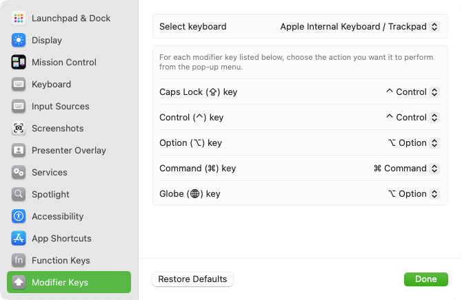
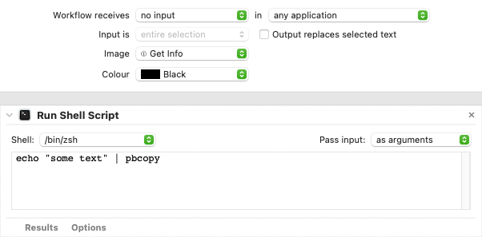
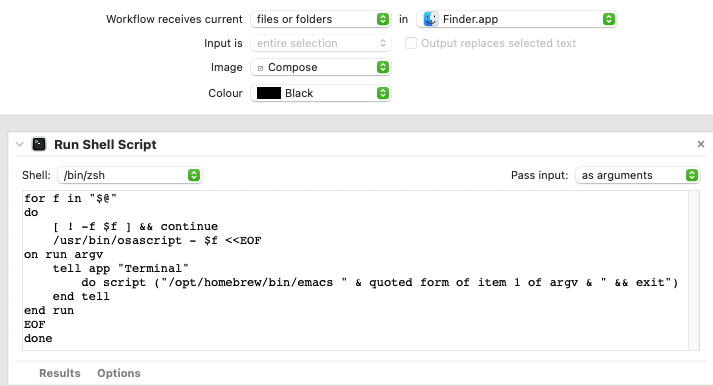

The C programming language
Unless otherwise specified on a case by case basis, these notes have been taken upon reading Kernighan B, W and D. M. Ritchie. Le langage C, Norme ANSI., 2nd edition. Translated into French (original title: The C programming language) by J.-F. Groff and E. Mottier. Masson, Paris and Prentice Hall, London, 1997.
Variable types
There are four basic variable types:
- There are char, which can optionally be unsigned.
- There are int, which can optionally be signed/unsigned and short/long, with the following constraints:
- 16 bits <= short int <= int <= long int
- 32 bits <= long int
- There are floats.
- There are doubles, which can optionally be long.
Sizes of these different types are platform-dependent (check <limits.h> and <float.h> for more information).
One can use suffixes on numerical constants to force types: u or U for unsigned, l or L for long, f or F for float. For example: 3.2F (decimal constant are of type double by default).
Order of precedence
The following table is a simplified version of the one that can be found in Kernighan & Ritchie.
| Operator | Associativity |
|---|---|
| () [] -> . | left to right |
| ! ~ ++ -- *(dereferencing) &(referencing) (type) sizeof | right to left |
| * / % | left to right |
| + - | left to right |
| < <= > >= | left to right |
| == != | left to right |
| && | left to right |
| || | left to right |
Pointers
0 is the only integer that can be assigned to or compared with a pointer. It is never a valid address, so it can be used to indicate an invalid pointer. It is better to use NULL for invalid pointers though. NULL is defined in <stdio.h>.
The only arithmetic operations that are allowed with pointers are:
- Assignment of a pointer to another pointer (a cast is needed if the two pointers point on objects of different types).
- Assignment to and comparison with 0.
- Addition and subtraction of a pointer and an integer.
- Subtraction and comparison of two pointers which point on elements of the same array.
Enumerations
By default, enumerated variables are given values 0, 1, 2, etc. In the following example, FALSE will be set to 0 and TRUE will be set to 1.
enum {FALSE, TRUE}One can change the starting value, for example (FEBRUARY will be set to 2, and so on):
enum {JANUARY=1, FEBRUARY, MARCH, etc.}Structures
The size of a struct is not necessarily equal to the sum of the sizes of its individual components, because the system may pad (within the memory) some of its individual components for alignment reasons.
Common or tricky sources of errors
Order of evaluation
The arguments in a function call are evaluated in arbitrary order. For example, the behavior of the second statement in what follows is undefined:
n = 2;
printf("%d %d", ++n, n*n)It may print "3 4" (if n*n is evaluated before ++n), or "3 9" in the other case.
Similarly, the order of evaluation of the operands of mathematically commutable operators (e.g. addition, multiplication) is arbitrary. The same kind of undefined behavior can occur if operands have side effects (such as incrementing a variable that is used in the other operand).
Switch and break
In a switch/case statement, use break at the end of each clause to make sure that no other clause is executed. Otherwise, several clauses may be executed.
The HTML markup language
Useful bindings in Emacs' HTML+ mode:
| Action | Binding |
|---|---|
| Open new tag | C-c C-o |
| Close currently open tag | C-c C-e |
| New paragraph | C-c RET |
| New header (h1, h2, etc.) | C-c C-1, 2, etc. |
| Delete tag (not its content) | C-c C-d |
| Create (un)ordered list | C-c C-c u or o |
| Open current buffer in web browser | C-c C-v |
The JavaScript programming language
Unless otherwise specified on a case by case basis, these notes have been taken upon reading Eloquent JavaScript, A Modern Introduction to Programming, second edition, by Marijn Haverbeke, No Starch Press, San Francisco, 2015.
Basic data types
- Numbers (special values: Infinity, -Infinity, NaN)
- Strings
- Booleans (true and false, in lower case)
- Objects
- Functions
- Undefined values: null and undefined. Note that (typeof null) returns "object".
Tricky logical expressions
Convertions to booleans: the values 0, NaN, and "" are converted to false. Everything else is converted to true.
The logical expression (null == undefined) evaluates to true.
(exp1 || epx2) and (exp1 && exp2) evaluate to either exp1 or exp2 (not true or false), so they might not evaluate to boolean values. For example, (false || "hello") evaluates to "hello".
The operators === and !== check whether types and values are equal (i.e. they do not do type coercion before the comparison), whereas == and != do do type coercion.
Other tricky things
Be careful with surprising implicit type coercions, for example:
- 10 * null evaluates to 0 (null is coerced to 0). However, (null == 0) evaluates to false.
- "10" - 1 evaluates to 9 ("10" is coerced to a number).
- "10" + 1 evaluates to "101" (1 coerced to a string).
Uninitialized variables have the value undefined.
Accessing a property that does not exist in an object is not an error, it yields an undefined value.
In a function, a return statement without a value returns undefined.
Calling a function with the wrong number of arguments creates no error. Extra arguments are ignored and missing ones are set to undefined.
Similarly to C, a break statement is needed at the end of each clause in a switch/case statement.
In a block, "let" creates a variable that is local to the block, whereas var does not create a new variable if it already exists in the parent block
The Python programming language
Assignment of mutable vs immutable objects
Two assignments to literals that represent immutable objects of equal value will point to the same object. However, two assignments to literals that represent mutable objects of equal value will point to two different objects. For example:
>>> a = "Hello"
>>> b = "Hello"
>>> a == b
True
>>> id(a) == id(b)
True
>>> a = ["Hello"]
>>> b = ["Hello"]
>>> a == b
True
>>> id(a) == id(b)
FalseGit (version control)
Working with multiple branches
There is a branch on a remote but this branch does not exist locally, and I want it locally:
git fetch $remote_name
git branch $local_branch_name $remote_name/$remote_branch_nameThere is a local branch which does not exist on the remote, and I want it on the remote:
git checkout $local_branch_name
git push [-u] $remote_name $remote_branch_namegit checkout $feature_branch
git rebase $main_branchMiscellaneous
Definitively and irreversibly remove the last commit (use wisely! or not at all...):
git reset --hard HEAD^1ImageMagick
Remove margins around an image:
mogrify -trim my-image.pngMacOS configuration
Modifier keys
Here is how I like to set up my modifier keys on MacOS (System settings > Keyboard > Keyboard Shortcuts > Modifier Keys): Automator Quick Actions
To create custom actions in MacOS, open Automator and create a Quick Action (see examples below). Once your Quick Action is created, you can associate it with a keyboard shortcut in System settings > Keyboard > Keyboard Shortcuts > Services > General.
Quick actions are saved in ~/Library/Services. To go to ~/Library in Finder, hold
down the Option key while clicking on the "Go" item in the menu bar at the top of the screen.
Copy text to clip board
I use this type of Quick Action with my email addresses so that I never mistype them: Edit file in terminal-based text editor
This Quick Action allows me to easily edit a text file from Finder (this example uses Emacs):
You can find it in Finder's Quick Actions:
- By right-clicking on one or more files
- In the bottom right part of the Finder window when using the "columns" view